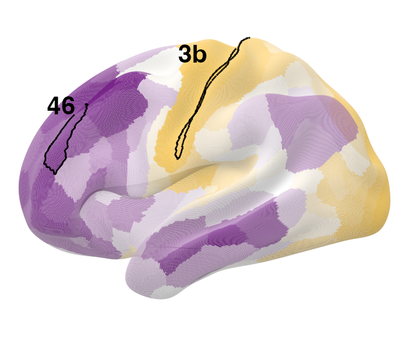
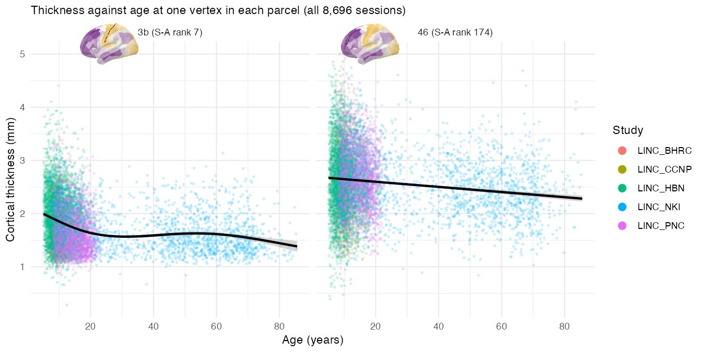
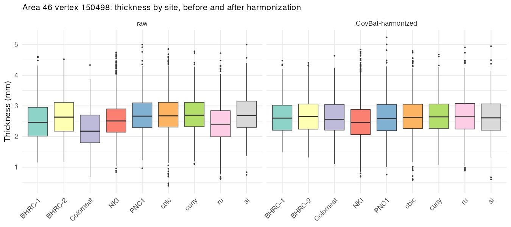
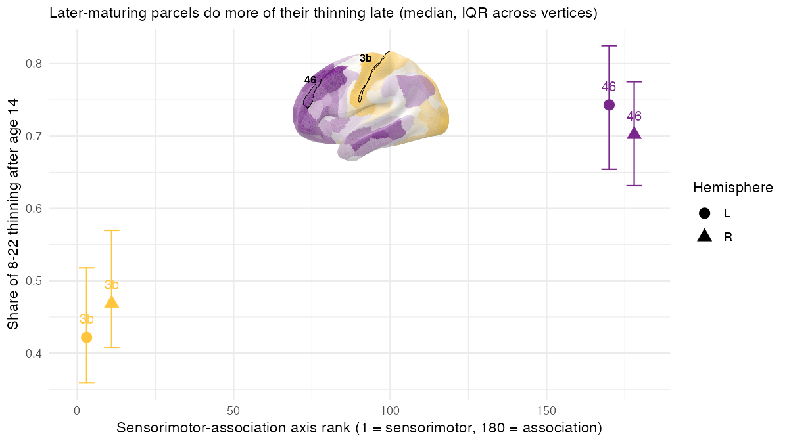
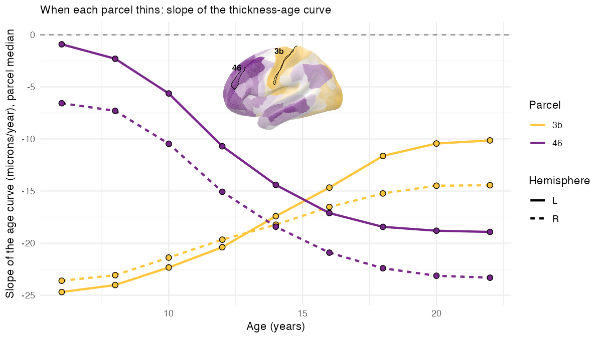

Cloud TileDB: RBC Cortical Thickness from S3
rbc-s3-tiledb.Rmd
The Reproducible Brain Charts (RBC) FreeSurferPost release is available as a TileDB store on a public S3 bucket: 70 surface measures, each 327,684 fsLR-164k vertices by 8,696 sessions from five studies (BHRC, CCNP, HBN, NKI, PNC; ages 5–85). That is 553 GB. This article is about a report you can run yourself that fits models to those data without downloading them: ModelArray reads the handful of tiles it needs, straight from S3, and leaves the rest where it is.
The report asks a question with a known answer, so you can tell whether it worked. The cortex thins through childhood and adolescence, but not everywhere at the same time: primary sensory cortex matures first and has little thinning left after mid-adolescence, while association cortex keeps thinning through the teens and into the twenties (Shaw et al., 2008; Tamnes et al., 2017). Sydnor et al. (2021) order every region along a sensorimotor–association (S-A) axis, from sensory and motor cortex at one end to prefrontal association cortex at the other. Put together: a parcel near the sensorimotor end should do most of its thinning early, and one near the association end should do most of it late. The report tests this on two Glasser parcels at opposite ends of the axis — area 3b (primary somatosensory, rank 7) and area 46 (dorsolateral prefrontal, rank 174) — one vertex at a time, and never on the whole cortex.
What the report does
- Points TileDB at the bucket (two config settings, no AWS account).
- Lists the store with
ModelArraySummary(), opensthicknesswithModelArray(), and downloads the cohort CSV (age, sex, site). - Works out, before reading anything, how many tiles each parcel touches and how many megabytes that is.
- Looks at single vertices with
exampleElementData(): thickness against age, a GAM with site as a covariate, its derivative, and a mixed model for repeat sessions. - Reads each parcel’s vertices from S3 in one go and harmonizes them
across the nine scanning sites with CovBat
(
ComBatFamily::covfam(), keepings(Age, k = 4) + sex), then writes the raw and harmonized blocks into a small local ModelArray store. - Runs
ModelArray.gam()straight from S3 on one parcel (site as a covariate) and on the local store for every parcel, raw and harmonized, to show what harmonization changes; thenModelArray.wrap()with a customfit_vertex()that adds anfx = TRUEtest statistic, ΔR²adj, predicted thickness every two years and the derivative of the age curve with a simultaneous interval, for ages 5–23. - Summarizes per parcel, plots the late fraction of thinning and the slope-by-age curves against S-A rank, and compares them with the literature.
- Writes CSVs, saves the results into the local store with
writeResults(), and exports CIFTI dscalars plus.specfiles for Connectome Workbench. - Prints how long each step took and how many bytes came over the wire.
Run it
In the browser
Click the Binder badge at the top. After a minute or two RStudio
opens with ~/rbc_s3_example/rbc_s3_tiledb_example.Rmd
ready; open it and press Knit. Binder gives one core
and about 2 GB of memory, so the report detects it and uses its smallest
settings (three left-hemisphere parcels, one tile each). Expect 10–15
minutes. Binder sessions are public and disappear after ten idle
minutes, so download anything you want to keep (the
rbc_s3_example folder has the HTML, CSVs and CIFTI
files).
On your own machine
You need ModelArray from the GitHub main branch (TileDB support), the TileDB packages, and a few modelling packages:
install.packages(c("tiledb", "jsonlite", "mgcv", "ggplot2", "gratia", "gamm4", "lme4", "rmarkdown", "cowplot", "png"))
BiocManager::install("TileDBArray")
remotes::install_github("andy1764/ComBatFamily")
remotes::install_github("PennLINC/ModelArray")Connectome
Workbench is optional; with wb_command on your PATH the
report writes the CIFTI files and a .spec you can open in
wb_view. Then render:
example <- system.file("examples/rbc-s3-tiledb/rbc_s3_tiledb_example.Rmd", package = "ModelArray")
out_dir <- path.expand("~/rbc_s3_example")
dir.create(out_dir, recursive = TRUE, showWarnings = FALSE)
# quick: areas 3b and 46 in the left hemisphere, two tiles per parcel
rmarkdown::render(example, output_dir = out_dir, knit_root_dir = out_dir, intermediates_dir = tempdir(),
params = list(quick = TRUE, n_cores = 4, out_dir = out_dir))
# full: areas 3b and 46 in both hemispheres, six tiles per parcel
rmarkdown::render(example, output_dir = out_dir, knit_root_dir = out_dir, intermediates_dir = tempdir(),
params = list(quick = FALSE, n_cores = 8, out_dir = out_dir))Other parameters (parcels, hemispheres,
max_tiles_per_parcel, max_vertices_per_parcel,
harmonize, write_cifti,
allocation_mb) are listed at the top of the Rmd. The report
never writes to S3; everything lands in out_dir.
What to expect
Numbers from runs on an Apple-silicon Mac (14 cores, 36 GB; the report used 8 cores).
| Quick | Full | |
|---|---|---|
| Parcels | 3b, 46 (left) | 3b, 46 (both hemispheres) |
| Vertices analysed | 600 | 2,000 |
| Read from S3 | 296 MB (2 tiles per parcel) | 996 MB (6 tiles per parcel) |
| CovBat | 2.5 min on 2 cores | 4.1 min on 4 cores |
fit_vertex() at every vertex |
42 s | 3.6 min |
| Whole report | 8 min | 20 min |
The full thickness scalar is 10.6 GB and the whole store 553 GB, so the full run reads about 0.2% of the store.
Every tile check passed: each parcel read exactly the tiles predicted
before reading. The derivative of the age curve matches
gratia::derivatives() to about 1e-9 mm/yr.
The literature check passes. Area 3b (sensorimotor) does most of its thinning early and area 46 (association) does most of its late: the share of the 8–22 thinning that happens after age 14 is about 0.4 in 3b and about 0.7 in 46 (Spearman ρ = 0.89 across the four parcel-hemispheres; age of fastest thinning ρ = 1.00):
| Parcel | S-A rank | Late fraction (L / R) | Age of fastest thinning | Slope no longer clearly negative after |
|---|---|---|---|---|
| 3b | 7 | 0.41 / 0.48 | 5 y | 19–23 y |
| 46 | 174 | 0.74 / 0.71 | 23 y | still thinning at 23 |
Area 3b thins fastest in early childhood and is nearly flat by the late teens; area 46 thins slowly in childhood and fastest in the late teens and twenties — exactly the sensorimotor-first, association-last ordering of the S-A axis.
The S-A axis and the two parcels, in the colour scheme of Sydnor et al. (2021, Figure 2A) — gold at the sensorimotor pole, purple at the association pole:





How it works
Reaching the bucket. ModelArray uses the
tiledb package’s default context. Set the region and
anonymous access on it once, before ModelArray():
cfg <- tiledb::tiledb_config()
cfg["vfs.s3.region"] <- "us-east-1"
cfg["vfs.s3.no_sign_request"] <- "true"
tiledb::tiledb_ctx(cfg)
uri <- "s3://fcp-indi/data/Projects/RBC/RBC_FreeSurfer-Post_ModelArray/rbc_freesurferpost.tdb"
ModelArraySummary(uri)
ma <- ModelArray(uri, scalar_types = c("thickness", "curv"))The environment variables TILEDB_VFS_S3_REGION and
TILEDB_VFS_S3_NO_SIGN_REQUEST do the same thing. For a
private bucket, use your usual AWS credentials instead of
no_sign_request.
Tiles are the unit of cost. The store is dense
float32, tiled as 964 vertices by all 8,696 sessions (33.5 MB before
compression, 4–8 MB on the wire). Reading one vertex reads its tile, so
element.subset ranges that fall in the same tile are nearly
free, and a parcel whose vertices are spread over 20 tiles costs 20
tiles. The report prints this arithmetic before it reads, and caps each
parcel at its most populated tiles.
One read pass per query. The tiledb R
package reads a query in passes whose size is set by
tiledb::set_allocation_size_preference() (10 MiB by
default). Each pass re-fetches the tiles it touches, so with the default
a 3-tile read can download 18 tiles. The report sets 512 MB; the
report’s runtime table checks that the number of tiles read matches the
prediction. This is separate from
options(ModelArray.tiledb_read_block_mb), which controls
how many elements ModelArray asks for at once (see
vignette("large-scale-analyses")).
Results stay local. writeResults()
writes to a local .h5 (or .tdb); the S3 store
is never written to.
Why CovBat on a parcel at a time. Nine sites differ
in both the mean and the spread of thickness, so a site
covariate is not enough. CovBat harmonizes mean, variance and the
covariance between features across sites. Harmonizing vertex by vertex
inside the per-element function would work, but it is slow (one GAM fit
per vertex just for the correction) and leaves nothing for the
empirical-Bayes step to pool across. Reading a parcel’s vertices as one
block and harmonizing them together is the method’s intended use, costs
one covfam() call per parcel, and the harmonized block goes
into a local HDF5 store that ModelArray reads like any other. Parcels
are harmonized independently, so the report runs them in parallel, one
per core (parallel::mclapply(); serially on Windows and on
Binder). CovBat keeps every per-vertex GAM fit, so the report drops the
copies of the data each fit carries, which covfam() never
uses again; the harmonized values are unchanged, and each worker needs
about 1 GB per 300 vertices. Repeat sessions (BHRC, NKI) are treated as
independent, which the report says plainly and contrasts with a
one-vertex longitudinal ComBat + GAMM fit.
One scalar at a time. ModelArray can attach a second
scalar as an element-wise covariate when it lists the same source files
as the phenotypes. In this store every scalar has its own file per
session, so curv cannot ride along with
thickness; the report uses thickness alone.
GAM choices. s(Age, k = 4) with REML,
following PennLINC practice: a developmental curve needs at most two or
three bends. Penalized p-values can be optimistic, so the test statistic
comes from an fx = TRUE refit. Effect size is the change in
adjusted R² when the smooth is dropped (what
changed.rsq.term.index gives in
ModelArray.gam()). Direction and timing come from the
derivative of the fitted curve with a simultaneous interval (the same
construction as gratia::derivatives()).
See also
-
vignette("large-scale-analyses")for memory and block-size settings on big stores. -
vignette("modelling")forModelArray.gam(),ModelArray.wrap()and the streaming-harmonization case study. -
vignette("modelarray-storage")for the HDF5 and TileDB layouts. - The example folder:
system.file("examples/rbc-s3-tiledb", package = "ModelArray"), including the provenance of the vendored Glasser-164k labels and S-A ranks.
References
- Bethlehem RAI et al. (2022). Brain charts for the human lifespan. Nature 604, 525–533.
- Glasser MF et al. (2016). A multi-modal parcellation of human cerebral cortex. Nature 536, 171–178.
- Sydnor VJ et al. (2021). Neurodevelopment of the association cortices. Neuron 109, 2820–2846.
- Shaw P et al. (2008). Neurodevelopmental trajectories of the human cerebral cortex. J Neurosci 28, 3586–3594.
- Tamnes CK et al. (2017). Development of the cerebral cortex across adolescence. J Neurosci 37, 3402–3412.
- Chen AA et al. (2022). Mitigating site effects in covariance for machine learning in neuroimaging data. Hum Brain Mapp 43, 1179–1195. (CovBat)